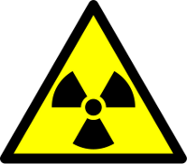

La radioactivité est un phénomène découvert en 1896 par Henri Becquerel sur l'uranium et très vite confirmé par Marie Curie pour le radium. Il s'agit d'un phénomène physique naturel au cours duquel des noyaux atomiques instables, dits radioisotopes, se transforment spontanément (se désintègrent) en dégageant de l'énergie sous forme de rayonnements divers, pour se transformer en des noyaux atomiques plus stables ayant perdu une partie de leur masse. Les rayonnement ainsi émis sont appelés, selon le cas, des rayons α, des rayons β ou des rayons y.
| Risque d'irradiation. | Risque de danger de mort ou de dommages sérieux. |
|---|---|
|  |
|
Pour mesurer la radioactivité, on distingue deux types de grandeurs : les grandeurs objectives et les grandeurs subjectives.
Ces grandeurs sont mesurables à l'aide d'appareils de physique :
Ce sont des grandeurs non mesurables directement. Elles sont estimées à partir de mesures et de coefficients de pondération définis par la Commission internationale de production radiologique (CIPR).
| Emetteur | Activité | |
|---|---|---|
| Corps Humain | 8000 Bq | |
| Element | Isotope | Activité |
| Potassium (K) | 40K | 263kBq/g |
| Uranium (U) | 235K | 80kBq/g |
| 234K | 230MBq/g | |